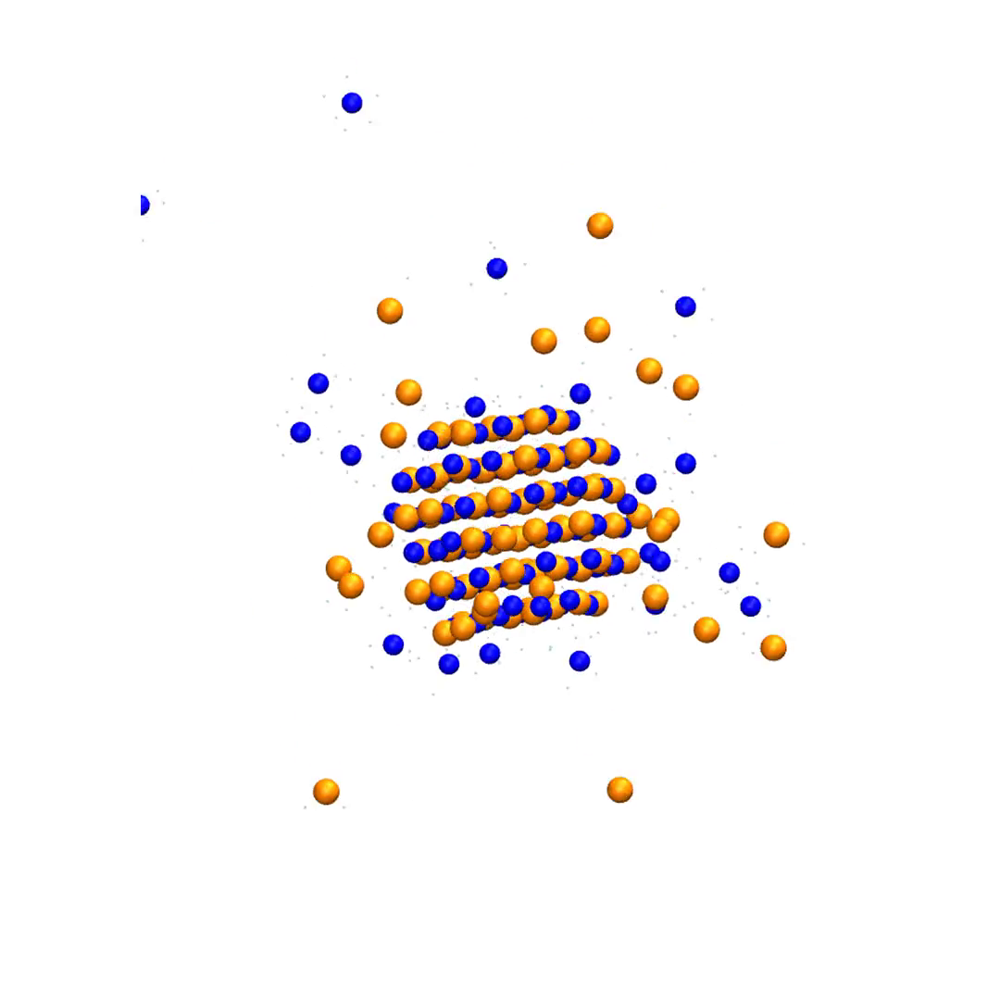

01
NaCl dissolution in water
Molecular-dynamics case study following surface erosion and ion detachment from a nanoscale salt cluster in explicit water.
Computational chemistry · molecular simulation · scientific software
I build and analyze molecular models, turn simulation data into interpretable evidence, and develop reproducible computational workflows for chemistry and molecular science.
Core practice
Selected work
A small set of case studies and software projects chosen to show how I formulate computational questions, build workflows, analyze results, and communicate limitations.
Molecular-dynamics case study following surface erosion and ion detachment from a nanoscale salt cluster in explicit water.
An installable command-line workflow for Q-Chem TDDFT post-processing, broadened spectra, spectral-region assignment, and representative-structure clustering.
Reusable utilities for molecular-file processing, charge analysis, structural inspection, radial-density analysis, hydration shells, and interfacial orientation.
Simulation study
The current flagship case study uses real simulation media and a quantitative cluster metric to separate molecular interpretation from visual impression.

Molecular dynamics · 300 K · 1 ns
The analysis follows progressive surface roughening and ion detachment rather than treating the trajectory as a molecular movie alone.
Open code
Public repositories emphasize reproducible inputs and outputs, command-line use, scientific assumptions, and separation of code from unpublished or restricted research data.
End-to-end TDDFT analysis from Q-Chem outputs to spectra, spectral regions, state assignments, and representative geometries.
↗Focused utilities for molecular files and trajectory analysis, including radial density, hydration shells, and interfacial orientation.
↗Lightweight Bash helpers for staged AMBER minimization, heating, equilibration, and GPU production workflows.
↗